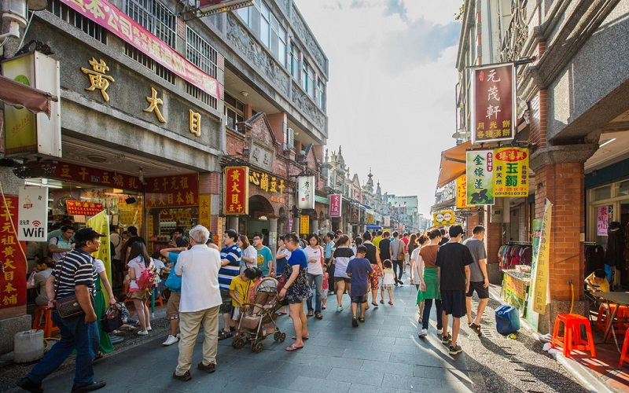
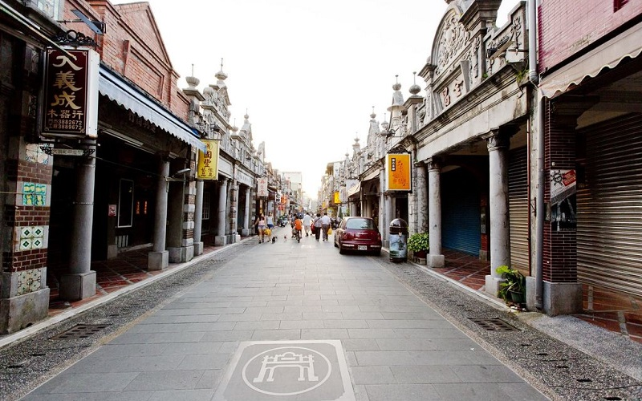
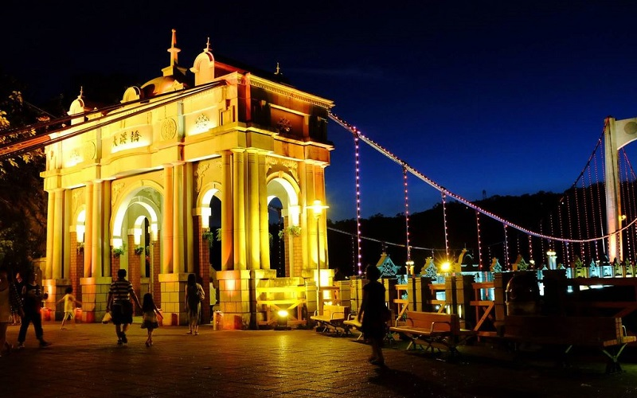
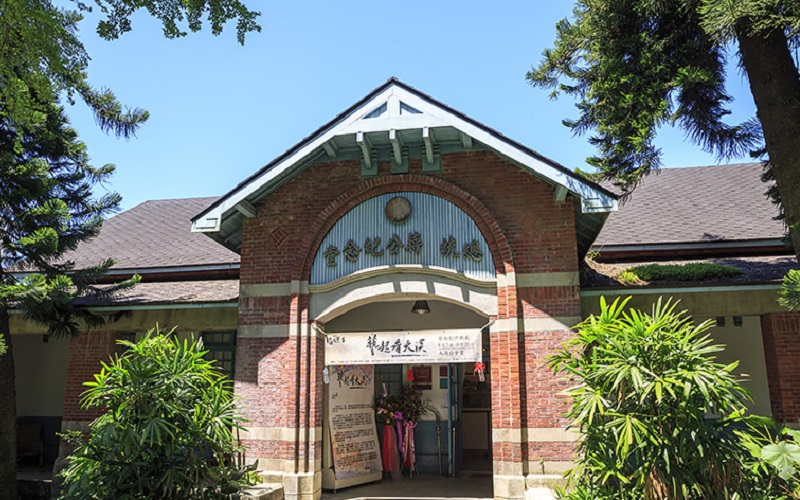
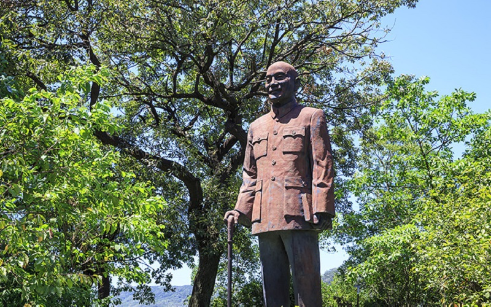

Daxi
Taoyuan City
Daxi Old Street
   Dasi District, formerly known as DaXi Township, is a district in eastern Taoyuan City and is named after the Dahan
River which flows through the area. In March 2012, it was named one of the Top 10 Small Tourist Towns by
the Tourism Bureau of Taiwan. The Daxi Bridge is across the Dahan River and features the Baroque-style archway.
The Daxi Old Street is a historical spot in this area. The street used to be the bustling hub for camphor and
tea trades which was built during the Japanese rule of Taiwan. It consists of old stores along Heping Road,
Zhongshan Road and Zhongyang Road and is mainly centered on Heping Old Street nowadays. It is also filled with
diverse stores with the facade designed in Baroque style that is a perfect blend of East and West. Next to the
Daxi Old Street is the Guesthouses of Chiang Kai-shek. It is the residence of the former president-- Chiang Kai-shek.
Visitors can see the living rooms, bedrooms and studies inside and image the livestyle of the former president.
- Best seasons: all year around
- Transportation:
Bus station in Daxi is Daxi Bus Station of Taoyuan Bus. Daxi is served by National Highway No. 3 and
Provincial Highway No. 66.